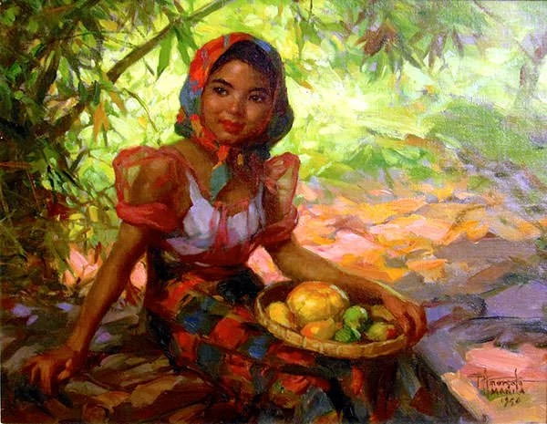
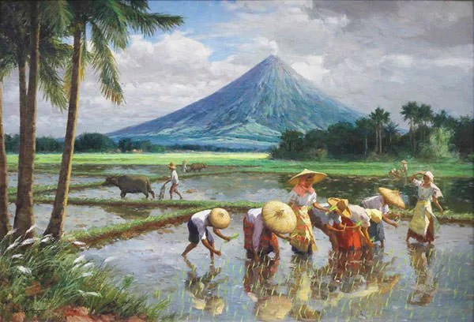
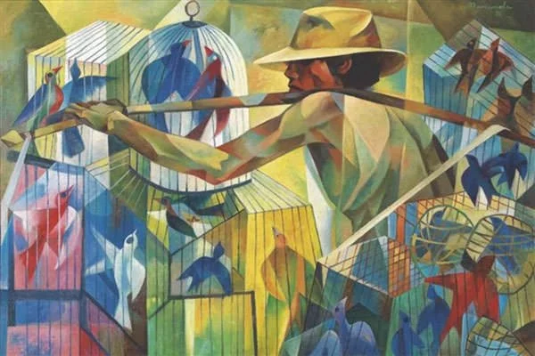
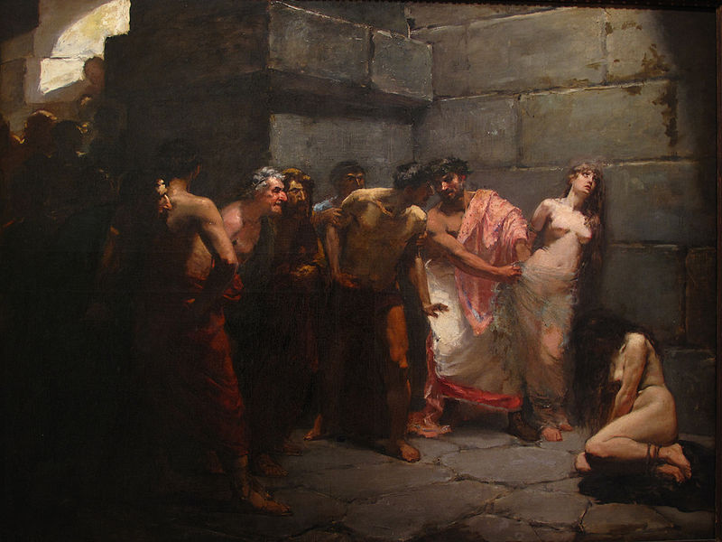
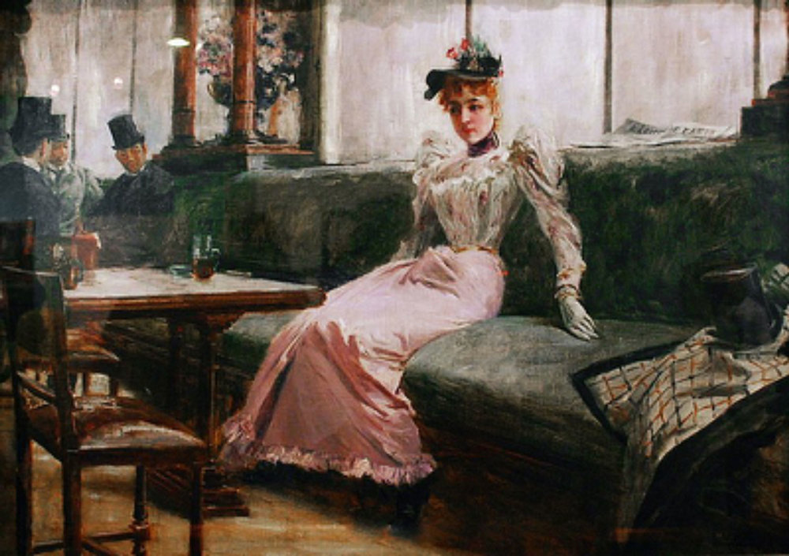

Juan Luna's Spoliarium

Fernando Amorsolo's Fruit Gatherer

Fernando Amorsolo's Planting Rice

Vicente Manansala's The Bird Seller

Félix Resurrección Hidalgo's Las Virgenes Cristianas Expuestas al Populacho

Juan Luna's The Parisian Life
